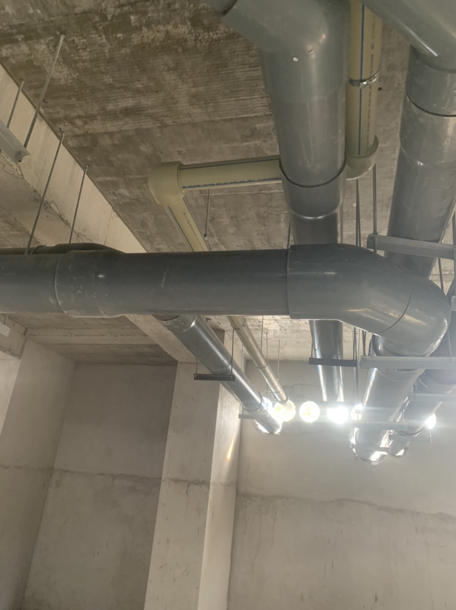
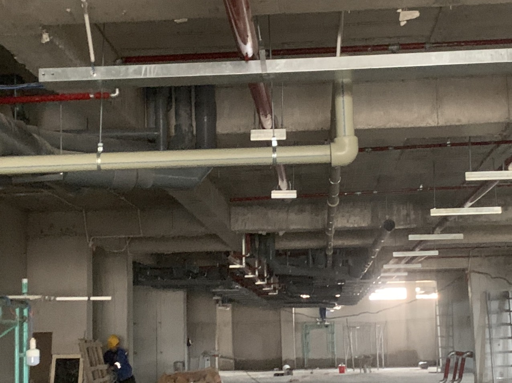

Sửa rò rỉ ống nước, dò tìm ống nước
Nguyên nhân thường dẫn đến rò rỉ ống nước
Ống nước, các thiết bị vệ sinh đã dùng lâu năm không tránh được hiện tượng hỏng hóc, rò rỉ Sử dụng ống nước, các thiết bị phòng tắm kém chất lượng sẽ dẫn đến nhanh rò rỉ, hỏng.
Với đường ống nước đi âm ( đường ống nước âm tường )thì việc nền nhà bị sụt lún cũng sẽ làm cho ống nước bị nứt, gãy Thợ lắp đặt không đúng quy chuẩn, các mối nối lỏng lẻo và bị bung, vỡ, gây rò rỉ nước.
Các van, vòi khóa sử dụng trong thời gian dài bị mòn, khóa không kín gây thất thoát nước.
Phao khóa, mở tự động gắn trên bồn nước không kín hoặc lâu ngày bị rò rỉ. Do vật nặng đè lên ống bị xì bể, đường ống đặt âm sâu dưới nhà do kết cấu ngôi nhà bị lún dẫn đến đè kéo theo ống nước bị biến dạng hoặc vỡ ngầm.
Ống lắp đặt sau đồng hồ bị rò rỉ, bể do không đảm bảo chất lượng nên không chịu được áp lực cao, dán keo không đều dẫn đến các mối nối không kín.
Dấu hiệu nhận biết đường ống bị rò rỉ nước
Hoá đơn tiền nước tăng cao đột biến so với tháng trước mặc dù lượng nước tiêu thụ không tăng Máy bơm nước hoạt động liên tục không ngừng nghỉ Đồng hồ nước vẫn chạy nhanh trong khi không sử dụng đến nước Bồn chứa cạn nước nhanh, lượng nước bị hao hụt nhiều
Áp lực nước của các thiết bị vòi nước, vòi hoa sen yếu, ngay cả trong nhừng thời điểm dùng nước ít Có hiện tượng rêu mọc tại những vị trí có đường ống nước đi qua hoặc đất sụt lở thành hố, …
Khắc phục càng sớm càng tốt
Khi thấy có bất cứ dấu hiệu nào cho thấy sự rò rỉ nước, bạn nên tìm cách khắc phục hoặc liên hệ sửa rò rỉ ống nước, dò tìm ống nước trong thời gian sớm nhất.
Hãy liên hệ ngay với Tuấn Đạt để được kiểm tra, dò tìm rò rỉ nước với giá thành bình dân nhất và được tư vấn chống thoát nước một cách hiệu quả và tinh tế nhất.
Đến với Điện Nước Tuấn Đạt, Quý khách sẽ thấy được giá trị của đồng tiền bỏ ra tương xứng với sản phẩm và lợi ích được mang lại.
Sửa chữa điện nước Tuấn Đạt nhận thi công các việc sau
Dò tìm rò rỉ nước
Tuấn Đạt nhận dò tìm nước bị rò rỉ ở những vị trí khó nhất mà các đơn vị khác có thể không làm được.
Nhận dò tìm rò rỉ nước cho các tòa nhà, trường học, nhà máy, khu công nghiệp, hộ gia đình, khu chung cư, tập thể… Xử lý các đường ống nước lớn bị rò rỉ nhanh chóng gây hao hụt nước, trào nước,… .
Sửa đường ống nước bị tắc
Tìm và sửa nhanh các đường ống cấp, hệ thống thoát nước bị vỡ hoạc rò rỉ, mất nước, trong tường, dưới đất và bên ngoài.
Sửa đường ống nước bị rò rỉ
Thông tắc triệt để, sửa đường ống nước của lavabo – bồn cầu. Sửa chữa ống nước bị bục gãy, nứt đường ống, ống nước bị rò rỉ âm tường,
Sửa chữa và lắp đặt mới ống PVC, HDPE-
Sửa ống nước nóng máy năng lượng mặt trời,
hàn ống nước nóng PPR Sửa chữa đường ống nước bị ngộp hơi, mất nước, đường ống nước bị nghẹt cát, rong rêu gây mất nước, nước yếu.
Sửa chữa, thay thế các thiết bị nước khi: gãy vòi, hỏng van,…
Sửa chữa máy bơm nước gia đình các loại, sửa máy bơm tăng áp, máy bơm đẩy cao dành cho gia đình, cơ quan….
Thông nghẹt đường ống nước triệt để, thông ống thoát nước thải, thông lavabo, thông chậu rửa chén, thông bồn cầu, thông cống nghẹt và thông nghẹt ống nước.
Lắp đặt đường ống cấp nước gia đình , lắp đặt đường ống thoát nước. Lắp đặt thiết bị vệ sinh phòng tắm, nhà bếp như: bồn cầu, chậu rửa, lavabo, bồn tiểu….
Thi công, cải tạo hệ thống cấp thoát nước hộ gia đình, cơ quan, công ty, trường học, xí nghiệp,….
Thi công lắp đặt, sửa chữa mới và cũ đường nước cấp và thoát nước cho công trình nhà ở.
Cách kiểm tra rò rỉ nước trong nhà – Cách xác định vị trí rò rỉ nước:
Chủ động lắp đặt thêm đồng hồ đo nước để có thể tự kiểm soát, kiểm tra xem có bị thất thoát hay rò rỉ hay không.
Đây chính là cách tìm rò rỉ nước trong tường đơn giản và dễ dàng lắp đặt lại hiệu quả rõ ràng.
Đầu tiên là phải kiểm tra đồng hồ đo nước nhà bạn, bạn có thể gọi cho các đơn vị cấp nước để biết chính xác vị trí. Khóa tất cả các thiết bị nguồn nước rồi mới tiến hành kiểm tra.
Kiểm tra xem khi đã khóa các nguồn nước các chỉ số trên đồng hồ có nhảy hay không, mỗi loại đồng hồ khác nhau sẽ có chỉ số báo khác nhau, có thể là một thanh hình tam giác cũng có thể là một bánh răng hình tròn nó sẽ quay khi có nước qua đồng hồ.
Khi đang kiểm tra hãy chắc chắn rằng không có nước bên trong nhà đang sử dụng.
Nếu qua kiểm tra, thấy đồng hồ vẫn nhảy thì rất có thể đang bị rò rỉ. Sau khi đã xác định rằng hệ thống ống nước đang bị rò thì bạn phải xác định chính xác vị trí rò bằng máy dò đường ống nước âm tường.